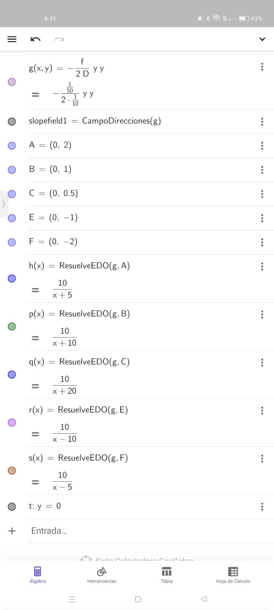
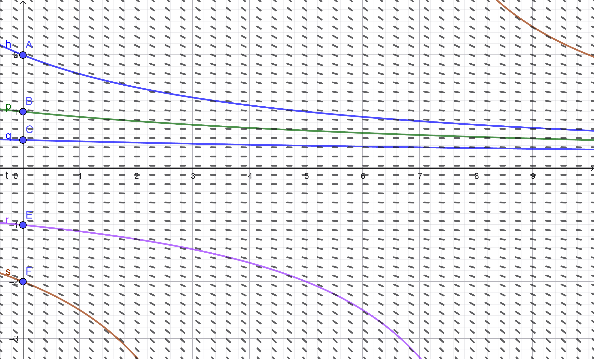

CÁLCULO DE VARIAS VARIABLES • ECUACIONES DIFERENCIALES
Ecuaciones Diferenciales Ordinarias de Primer Orden
Separación de variables • Campo de direcciones • GeoGebra
✏️ Mi operación + 📸 Mi gráfica
ENUNCIADO 1 • ENFRIAMIENTO
Ley de enfriamiento de Newton
Un cuerpo se enfría. La rapidez es proporcional a la diferencia con el ambiente (20°C). Si a t=0 está a 80°C y a t=5 min está a 50°C, ¿cuánto vale a los 10 min?
Interpretación: Baja cada vez más lento y se acerca a 20°C sin tocarla.
GeoGebra: f(x) = 20 + 60*exp(-0.1386*x)
ENUNCIADO 2 • CAÍDA LIBRE
Caída libre con resistencia del aire
Un paracaidista cae. La resistencia del aire es proporcional al cuadrado de la velocidad. Encuentra la velocidad terminal y la función de velocidad.
dv/dt = g - (k/m) v²g = 9.8 m/s² • v(0) = 0
Gravedad9.8 m/s²
v inicial0
Resistenciak v²
Preguntav terminal
✏️ Mi operación

📸 Mi gráfica en GeoGebra

Función: v(t) = √(g/c) • tanh( √(g·c) • t )
Solución: 1) dv / (g - c v²) = dt, donde c = k/m 2) Integrando se llega a la tangente hiperbólica 3) v(t) = √(g/c) • tanh( √(g·c) • t ) 4) Cuando t → ∞, tanh → 1, por lo tanto v terminal = √(g/c)
Interpretación: Al inicio acelera mucho, luego la resistencia lo frena y la velocidad se estabiliza en la velocidad terminal. Ya no acelera más.